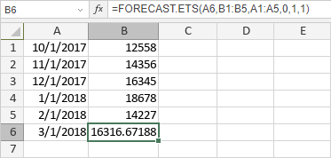

FORECAST.ETS funkcija
Funkcija FORECAST.ETS je jedna od statističkih funkcija. Koristi se za izračunavanje ili predviđanje buduće vrednosti na osnovu postojećih (istorijskih) vrednosti primenom AAA verzije algoritma eksponencijalnog izravnavanja (ETS).
Sintaksa
FORECAST.ETS(target_date, values, timeline, [seasonality], [data_completion], [aggregation])
Funkcija FORECAST.ETS ima sledeće argumente:
| Argument | Opis |
|---|---|
| target_date | Datum za koji želite da predvidite novu vrednost. Mora biti nakon poslednjeg datuma u opsegu timeline. |
| values | Opseg istorijskih vrednosti za koje želite da predvidite novu tačku. |
| timeline | Opseg vrednosti datuma/vremena koji odgovaraju istorijskim vrednostima. Opseg timeline mora biti iste veličine kao opseg values. Vrednosti datuma/vremena moraju imati konstantan razmak između sebe (iako se do 30% nedostajućih vrednosti može obraditi u skladu sa argumentom data_completion, a duplirane vrednosti mogu biti agregirane u skladu sa argumentom aggregation). |
| seasonality | Numerička vrednost koja određuje koji metod treba koristiti za detekciju sezonalnosti. Ovo je opcioni argument. Moguće vrednosti su navedene u tabeli ispod. |
| data_completion | Numerička vrednost koja određuje kako se obrađuju nedostajuće tačke podataka u opsegu timeline. Ovo je opcioni argument. Moguće vrednosti su navedene u tabeli ispod. |
| aggregation | Numerička vrednost koja određuje koja funkcija treba da se koristi za agregiranje identičnih vremenskih vrednosti u opsegu timeline. Ovo je opcioni argument. Moguće vrednosti su navedene u tabeli ispod. |
Argument seasonality može imati jednu od sledećih vrednosti:
| Numerička vrednost | Ponašanje |
|---|---|
| 1 ili izostavljeno | Sezonalnost se automatski detektuje. Pozitivni celi brojevi se koriste za dužinu sezonskog obrasca. |
| 0 | Nema sezonalnosti, predviđanje će biti linearno. |
| ceo broj veći ili jednak 2 | Navedeni broj se koristi kao dužina sezonskog obrasca. |
Argument data_completion može imati jednu od sledećih vrednosti:
| Numerička vrednost | Ponašanje |
|---|---|
| 1 ili izostavljeno | Nedostajuće tačke se izračunavaju kao prosek susednih tačaka. |
| 0 | Nedostajuće tačke se tretiraju kao nulte vrednosti. |
Argument aggregation može imati jednu od sledećih vrednosti:
| Numerička vrednost | Funkcija |
|---|---|
| 1 ili izostavljeno | AVERAGE |
| 2 | COUNT |
| 3 | COUNTA |
| 4 | MAX |
| 5 | MEDIAN |
| 6 | MIN |
| 7 | SUM |
Napomene
Kako primeniti funkciju FORECAST.ETS.
Primeri
Slika ispod prikazuje rezultat koji vraća funkcija FORECAST.ETS.
